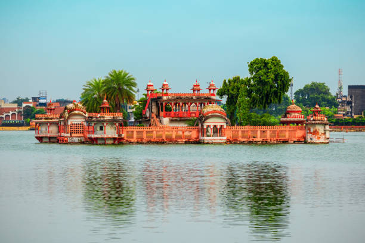
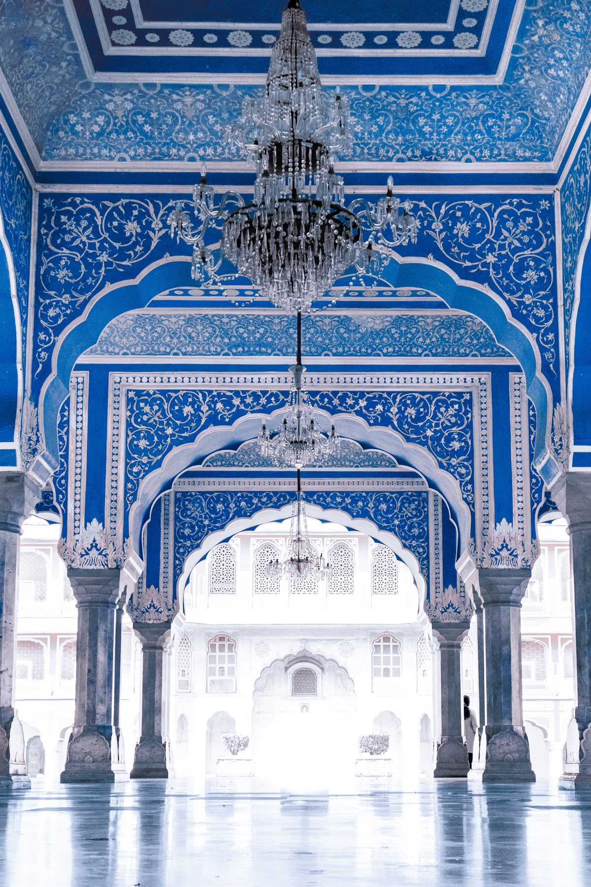

Ajmer
Ajmer is known for Ajmer Sharif Dargah and Ana Sagar Lake.
Try boat rides and shop at Dargah Bazaar.

Sikar
Sikar is famous for its historic forts and education hubs.
Visit Biyani College and Radhakishan Mandir.

Kolkata
Kolkata is known as the cultural capital of India, famous for its colonial architecture and festivals.
Visit Howrah Bridge and Victoria Memorial.

Burdwan
Burdwan is known for its rich history, temples, and agricultural significance.
Visit Curzon Gate and 108 Shiva Temples.

Aligarh
Aligarh is famous for its lock industry and prestigious Aligarh Muslim University.
Visit Aligarh Fort and Jama Masjid.

Kishangarh
Kishangarh is known for Phool Mahal and marble industry.
Explore Asia’s largest marble market.

Laxmangarh
Laxmangarh is a calm town with beautiful temples.
Discover Ghanta Ghar and local traditions.

Kota
Kota is known for coaching centers and Chambal River.
Visit 7 Wonders Park and enjoy riverside walks.

Delhi
Delhi is India’s capital, rich with historic monuments.
Visit India Gate, Red Fort & taste local street food.

Fatehpur
Fatehpur is known for painted havelis and Shekhawati art.
Visit Nadine Le Prince Haveli and enjoy local art.

Jaipur
Jaipur is a regal city that beautifully blends royal heritage, vibrant culture, and architectural grandeur.
Walk old streets, explore heritage havelis.

Pune
Pune is known for its educational institutions and cultural heritage.
Visit Aga Khan Palace, Shaniwar Wada, and enjoy local cuisine.